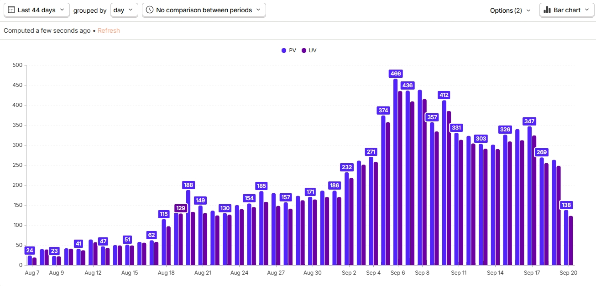
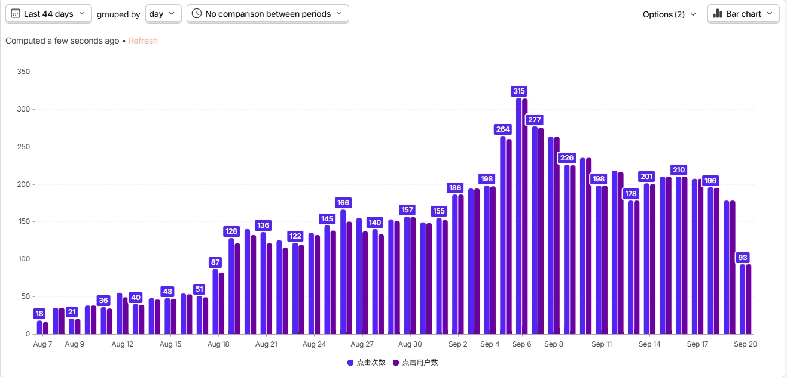
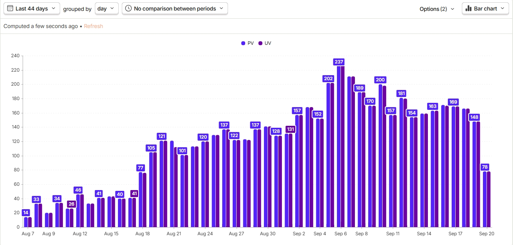
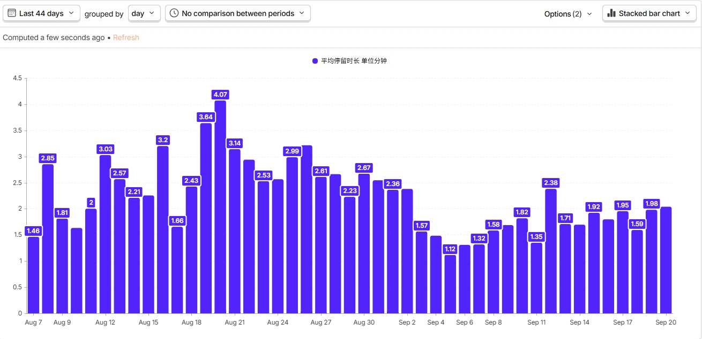

设备助手 1.0
设备助手核心能力
数据分析 · 统计与总结
累计表现 · 2026 / 8 / 7 – 9 / 18
① 关键指标
29,2288/7 累计绑定用户
→
37,8679/18 累计绑定用户
+8,639期间新增绑定
~206日均新增（人/天）
数据来源：Metabase Card 536（累计值 MCP 直查，新增 / 日均为计算得出）
7,812
欢迎页累计 UV
进入新手引导欢迎页
5,981
Get Started 点击
欢迎页内点击「开始引导」
5,002
完成页累计 UV
完成 7 步新手引导
1.95分钟
步骤页平均停留
单步骤页均值 · 总时长约 4.2 分钟
数据来源：设备助手埋点（MCP 直出）
各指标每日趋势 · 8/7 – 9/18




② 核心比率
期间新增绑定用户8,639
漏斗基数 100%
欢迎页 UV7,812
层级转化 90.4%相对新增绑定 90.4%
点击「Get Started」5,981
层级转化 76.6%相对新增绑定 69.2%
完成 7 步引导5,002
层级转化 83.6%相对新增绑定 57.9%
57.9%整体转化 · 新增绑定 → 完成引导
83.6%引导内转化 · 点击 Get Started → 完成引导
1.95分钟步骤页平均停留 · 完整引导总时长约 4.2 分钟
数据来源：期间新增绑定为 Metabase Card 536（计算得出）；欢迎页 / Get Started / 完成引导为设备助手埋点（MCP 直出）。层级转化＝本层 ÷ 上一层；相对新增绑定＝本层 ÷ 新增绑定用户。
③ 总结
对标行业：竞品调研显示，同类新手引导的完成率转化约为 75%。而 Air 1 设备助手 1.0 的引导内完成率达 83.6%（点击 Get Started → 完成 7 步引导），明显优于竞品水平；同时用户在步骤页的平均停留达 1.95 分钟、完整引导总时长约 4.2 分钟。更高的完成率叠加更长的停留时长，说明用户并非走马观花，而是真正把引导内容「看了进去」——这正是内容切片化、分步引导带来的价值。
设备助手 2.0 · 功能介绍
设备助手 2.0 能帮你做什么
如何体验
两条路径，进入设备助手 2.0
新手指引
首次绑定 Air 1，进入新手引导流程
3 步进入 第 1 步点击 Get Started 开始引导
第 1 步点击 Get Started 开始引导 第 2 步7 步引导，每一步右上角都有快捷入口
第 2 步7 步引导，每一步右上角都有快捷入口 第 3 步欢迎页展示当前步骤用户最关心的问题
第 3 步欢迎页展示当前步骤用户最关心的问题
常驻入口
完成新手指引，从 Air 1 设备控制页唤出
5 步进入 第 1 步聚合卡片进入
第 1 步聚合卡片进入 第 2 步进入 Air 1 控制页面
第 2 步进入 Air 1 控制页面 第 3 步右上角的常驻入口
第 3 步右上角的常驻入口 第 4 步指南页底部点击 Ask Cozie AI🎉 唤起 Cozie AI抵达设备助手 2.0
第 4 步指南页底部点击 Ask Cozie AI🎉 唤起 Cozie AI抵达设备助手 2.0设备助手 3.0
能力拓展 · 从单设备问答走向服务平台
3.0 的重心，从「做好一个设备的问答」转向「把设备服务做成可复用的平台」——技术底座、覆盖范围、运营策略三线并进。
01
技术底座重构
从「拼接」到「平台化」- 从 2.0 的单点 AI 问答升级为子 Agent 架构，能力可复用
- 构建 MomCozy 设备知识库，沉淀 38 个型号的知识
- 为后续多设备、多地区接入打地基，而不是每接一个设备就重写一遍
02
覆盖范围扩容
从「1 个设备 1 个地区」到「全设备 + 多地区」- 设备面：从仅 Air 1 → 全量连接 App 设备（Top 5 + 其他已上线设备兜底）
- 客服面：从仅在线人工 → 在线 + 离线客服闭环
- 地区面：从仅美区 → 逐步扩展至全球，受 Cozie AI 全球合规约束、分阶段推进
03
运营策略精细化
从「一刀切」到「分级覆盖」- 选品三原则：已连接兜底 × 高 VOC 优先 × 高销量 / 活跃优先
- 能力分级 L1–L4：不做「已 / 未接入」的二元判断，按问答深度分层
- 首批重点 5 款（M9、Air 1、M5 Smart、BM04、M5 Pro）冲 L3
- 其他 App 在线设备至少做到 L1 兜底，再按 VOC / 销量逐步升 L2
扫码安装
扫码下载，开启设备助手
打开相机扫一扫，
下载并安装 App
须知需要绑定 Air 1 吸奶器设备才能体验；首次登录请记得选择「美国区」（该功能暂时为美区独属功能）